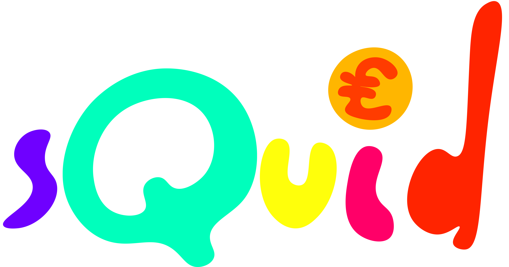
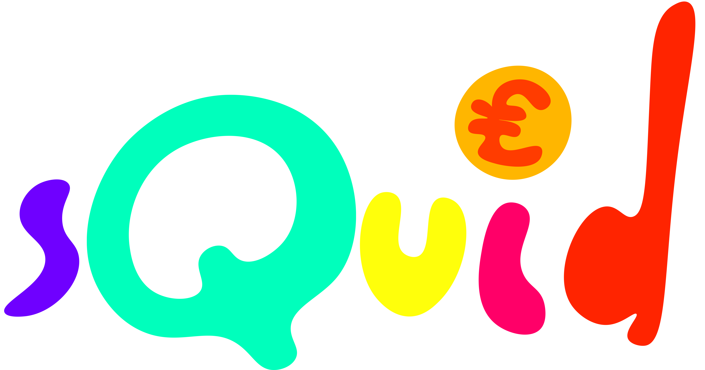
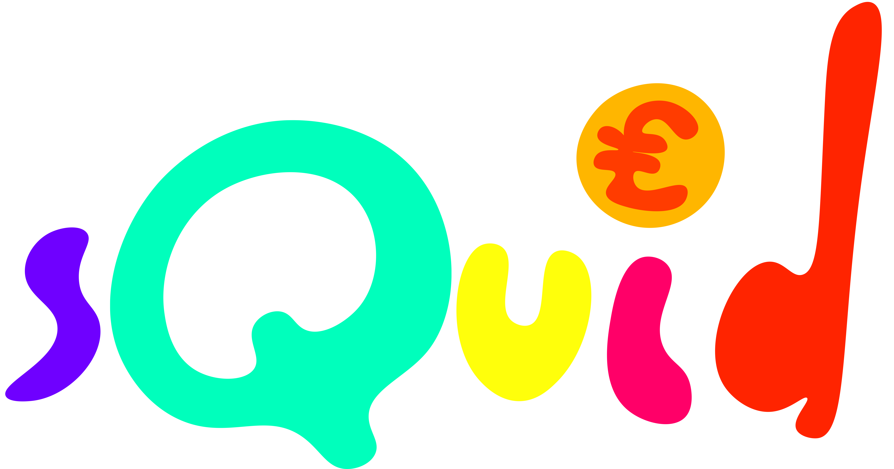
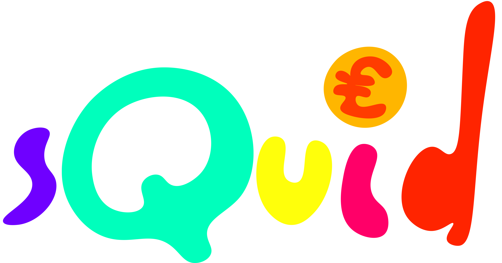

"My first project at CodeClan - creating a pocket money tracking app for kids. This project was built with Ruby (Sinatra Framework), HTML, Raw CSS, SQL (PostgreSQL), Illustrator and After Effects."
My first step is ugly but necessary - hand-sketching the layouts, user journeys and rough concept drawings. Visual thinking and immediately putting yourself in the position of the user makes you think about what they want and expect.
I also build out a single proto persona - this helps to contextualise who your user is, especially if they are a vastly different target demographic to your own (i.e age in this scenario). Usually I would do more but the timeframe of this project required efficiency.


The first thing I did was built out the functional code - getting the table persisting with SQL data and making sure all of the other sub-sites worked. Only once the product was working did I revisit the design.
Kids are easily bored and get frustrated with tasks they can't achieve easily. This is what I kept in mind when doing the design for this site. Large font sizes, bright colours and large elements (tables, buttons) make for an engaging and smooth user experience. Everything is clearly labelled and there is no complex terminology in the copy.
I also decided to tie in some of my limited experience as a cartoon animator to provide "characters" and an interesting setting for this app. The more "gamified" this app was, the more likely children would sit and learn to use it.
Here are some pictures of the final project. The full site can be downloaded from GitHub.